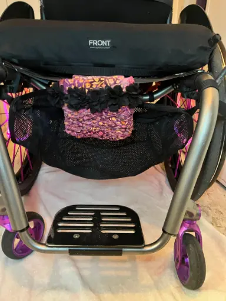
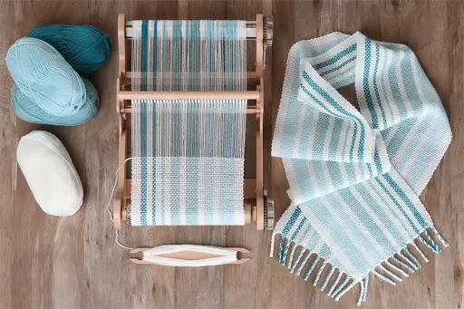
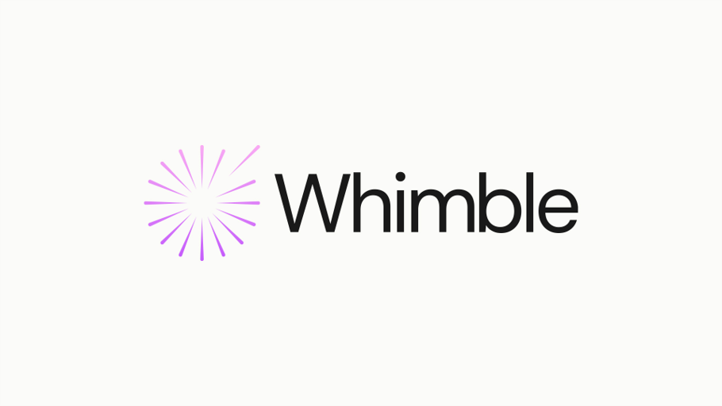
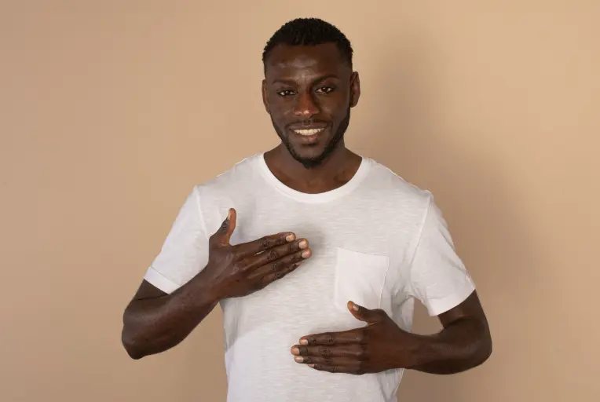
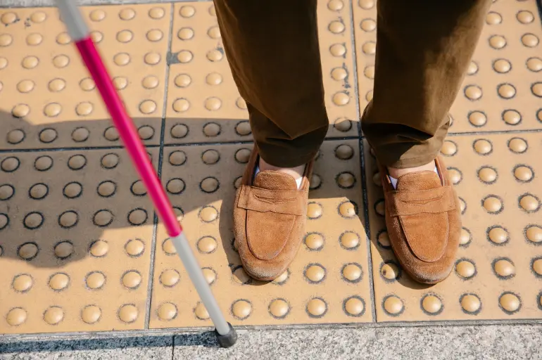
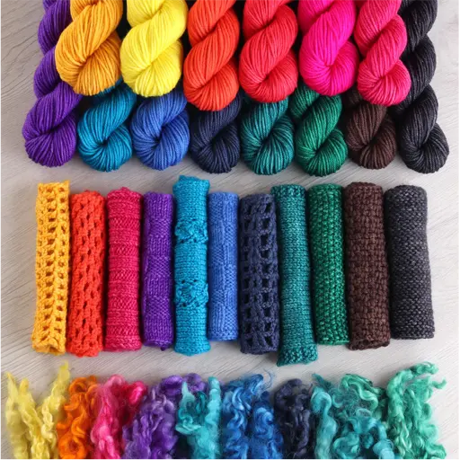
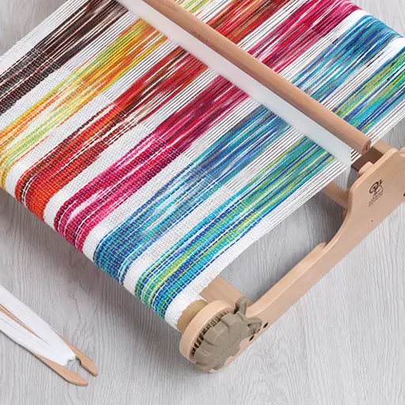
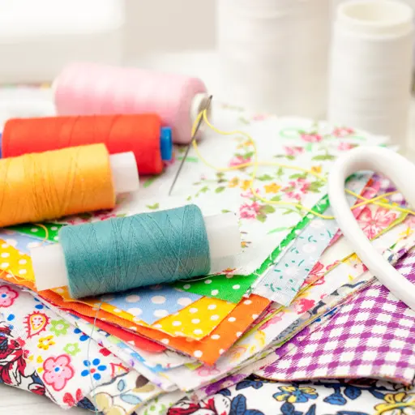
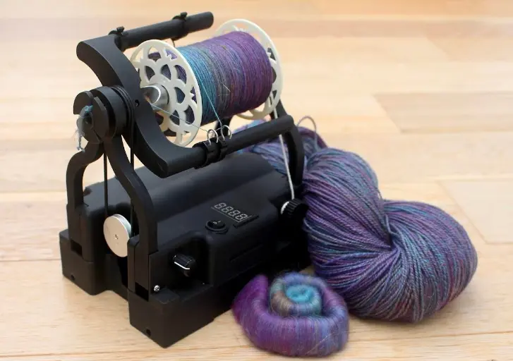

Curb Cuts and Cast-Ons
Curb Cuts and Cast-Ons is a low-cost, textile and fibre arts program for the Toronto disabled, Deaf/HoH, and neurodivergent communities. Organized by Elizabeth McCready, a disabled multi-craft textile and fibre artist.
Funded by a "Creative Communities" grant from the Toronto Arts Council, the artist's own contributions, and community support, the program provides access to high quality equipment, crafting tools and supplies, and opportunities to learn and socialize, in an accessible environment where Nothing About Us, Without Us.
The Winter 2026-2027 program has:
- 4-hour workshops in hand-sewing, yarn dyeing with food colour and Kool-Aid, and rigid heddle weaving.
- Monthly Community Open Studio events for social crafting, time to access equipment and tools, book rigid heddle looms, and shop in the accessible popup shop.
- Mini 30-90 minute workshops including: "learn to knit", "learn to crochet", "Victorian crazy patchwork", and "frame and inlke loom weaving".

Curb Cuts and Cast-Ons is the first step towards Liz's goal of starting a disability textile and fibre arts nonprofit in three to five years.
The organization will provide:
- Access to studios and equipment for professional disabled, Deaf/HoH, neurodivergent artists and fashion designers.
- Public workshops for the disability community in all fibre arts from sheep to scarf.
- Public exhibition opportunities in arts and crafts fairs.
It will be partially funded by workshops open to the general public, taught by disabled, Deaf/HoH, neurodivergent artists, and an accessible craft supply shop.


Accessibility
- Whimble Event Attendants Will be at All Events
-
The Curb Cuts and Cast-Ons project is partnered with Whimble for their event accessibility facilitation services. Not only does Whimble provides wonderful attendant care, they are also assisting with accessibility planning and coordination, and provide a follow-up accessibility report after each event, ensuring feedback is documented and acted on.

- Sunshine Therapy Dogs
-
Qualified Sunshine Therapy Dogs and their volunteer handlers bring a tail-wag ray of sunshine to every event.
Having a visit to pet and cuddle a friendly well trained therapy dog helps decompress and relieve anxiety in a new environment. They bring joy and a playful atmosphere to the events.

- ASL Interpreters at Some Events, and the Lead Artist Liz, is Relearning ASL
-
American Sign Language (ASL) interpretation will be available at some events. Liz is fundraising and writing additional grant applications to have ASL interpreters at all events.
Liz is hard of hearing and used to be functionally fluent in ASL, she is re-learning ASL in January 2027.

- Blind and Low Vision Friendly. Lead Artist’s Mom is Blind
-
Liz grew up with her mom being blind, accessibility is her default. She often refers to herself as a "seeing guide daughter".
Events are blind and low vision friendly, with tactile markings and braille labels. Furniture stays in the same location during each Community Open Studio event.
For workshops, handouts are available in large print PDF.

- Service Dog and Guide Dog Friendly
-
Grassy and concrete relief areas. There are comfy sanitized floor mats and water bowls.

What we do

- Workshops
-
Learn to craft with fabric and yarn with tools and equipment that's chosen for accessibility and fun!
- Community Open Studio
-
Access rigid-heddle looms and large equipment,or reserve a crafting kit with high quality tools and supplies while enjoying social crafting time with therapy dogs.
- Accessible Popup Shop
-
Support your community by shopping HST free in a calm wheelchair accessible environment, with braille and large print labels.


Winter 2026-2027 Workshops
4-Hour Workshops
-

Yarn Dyeing
Lear to dye yarn with Kool-Aid and food colouring!
Brighten up your winter with a colourful start to a weaving, knitting, or crochet project. Hand-dyed yarn is also a great gift!
-

Rigid-Heddle Weaving
Weave your own custom beautiful scarf with natural materials including organic cotton, merino/cashmere, or even beautiful recycled sari silk ribbon!
One of the most physically accessible fibre arts. Rigid-heddle waving can be done with one hand, with reduced fine motor function.
-

Hand-Sewing
There is so much you can create with some needle, thread, and a piece of cloth!
From mini-bags to hand sewing your own clothes, this is where it all starts.
Mini-Workshops
Mini-workshops are 30 to 90 minute workshops that run before or during Community Open Studio time. They are either group workshops (4-8 people), or semi-private (2 or 3 people). Mini-workshops either teach beginner skills, or expand on what you learned in a regular workshop.
Winter 2026-2027 Mini-Workshops
- Semi-private learn to knit
- Semi-private learn to crochet
- Learn Victorian crazy patchwork
- Inklette loom weaving
Depending on studio equipment purchases the following might be also offered:
- Circular machine knitting
- Accessible machine sewing basics
Is there a fee for Workshops?
In short, yes. However, community members can use their community points to cover either 50% of the fee, or for ODSP recipients 100% of their materials fee.
There’s a nominal materials fee to register in both 4-hour workshops and mini-workshops. This helps ensure people who register show up, and offsets some of the cost of your yarn and/or fabric.
Workshops and Mini-Workshops fee
- Nominal materials fee ($8 — $20)
- 50% off for ODSP Recipients, max fee $6 ($4 — $6)
- Use community points for 50% of the materials fee (ODSP recipients can use their community points for 100% of the materials fee)
Did you know that a 4-hour Introduction to Rigid-Heddle Weaving workshop without arts grant funding typically cost ~$200 + materials + HST, and the looms are $300 — $800 each?
Thanks to the Toronto Arts Council for making this financially accessible.
Community Open Studio
Community Open Studio events are a social time to continue your crafting journey without having to buy large expensive tools and equipment.
Learn something new in mini-workshops, volunteer to help build our community while earning community rewards points, or reserve one of the many crafting kits.
You don't have to take a 4-hour or mini-workshop to come to the Community Open Studio!
- Everything is at wheelchair user height.
- Braille and tactile labels will be on many items.
- There is no displays blocking your wheelchair, scooter, or rollator, and no carpet!
- Whimble attendants and volunteers are there to assist with access.
- Chill out while cuddling a Sunshine Therapy Dog.
- One drink ticket and one snack ticket included with admission.
- We have a Nespresso for hot and ice coffee!
- Reserve craft tool kits, book equipment, and use free upcycled materials
-

- Reserve a sewing, embroidery, knitting or crochet tool kit for free when you get your ticket on Eventbrite.
- Book large equipment like a rigid-heddle loom for a nominal fee.
- And choose from a selection of free upcycled materials.
- Use communal high quality tools like Fiskars scissors, Fiskars fabric sheers, or yarn ball winder.
- Social crafting time Bring your own project, or start a new one!
-

Enjoy a drink and snack, while you have some social crafting time.
- Got a project you’re working on? Feel free to bring it.
- Finished something? We love show and tell!
- Are you curious about another textile or fibre art you haven’t tried? Reserve a kit when you get your ticket, or sign out one that’s available.
- Volunteer and Earn Community Points
-

Volunteer to build our community while earning community rewards point.
Volunteer positions include:- Greeting newbies.
- Organizing supplies.
- Winding (or unwinding) yarn.
- Shop in the Accessible Popup Shop
-

- Shop at member prices with either your community points or your debit/credit card
- A large percentage goes towards supporting the Curb Cuts and Cast-Ons project.
- Braille and large print labels, nothing blocking wheelchair access to products, and sensory-friendly yarns and fabric make things accessible!
There’s no HST in the pop up shop!
How do I get Tickets for Community Open Studio?
Visit Eventbrite for dates and
registration
Follow us on Instagram and
subscribe to our free Substack to be
the first to hear about events.
- $8.00 ticket
- ODSP recipients ($4.00)
- Can use community points
Tool kits are available to reserve for free!
* Kits can be booked at registration. Some additional kits are available on a first-come, first-served basis without reserving.
What Equipment and tools are Available?
Community open studio events include use of tools and equipment for shared use as well kits that you can reserve for free with your ticket. A materials fee is charge at registration for warp yarn for Rigid heddle and Inkle looms. If you have lots of yarn to wind into balls from skeins, there’s an electric ball winder available ($1.00/30minutes). The manual ball winder is included.
Community/Shared Studio Equipment + Free Materials
Shared studio equipment includes:
- Mini-steam irons and table top ironing boards/pressing mats
- Fabric and non-fabric scissors
- Manual yarn ball winder and swift
- Mini-library of textile and fibre arts books and magazines.
Free materials:
- Upcycled fabric
- Fabric scraps (Did you know these have been called “cabbage” for centuries?)
- Yarn: Rigid heddle loom waste (Quality Ashford and Gist cotton weaving yarn)
What are Community Points?
The Community Rewards Points program is a way for members to earn points towards materials and supplies in the popup shop, or materials fees while helping to build our community.
Examples include:
- You volunteers as a greeter at a Community Open Studio
- You earn 825 Community Points
- One skein of Briggs and Little Regal is $8.25 (no HST at popup shop.)
- You can purchase a skein after the event, or save up their points for that special something.
About the Lead Artist

The lead artist, Elizabeth McCready, moved from Missisauga, Ontario to Wellington, New Zealand when she was 5 years old. Her nana was a
master hand knitter, machine knitter and crocheter, who designed and machine knit the jerseys for the New Zealand All Blacks rugby team.
Her nana taught Liz to knit when she was 6, which starter her lifelong love of textile and fibre arts.
Her elementary school was right next to a sheep farm. Several times a year the sheeps would get out to the schools rugby field, her classmates and her would get out of the school to heard the sheep back to the farm.
She was surrounded by fibre arts at her school, everyone knew how to finger knit, there was weaving and sewing, and the kids of course could just get some wool from over the fence. At home, she even had a vintage Singer treadle operated sewing machine (operated by a foot rather than electricity).


Fun facts!
GoFundMe
You can help make textile and fibre arts more accessible!
$25,000
- ASL interpreter for all events.
- Class set of 6 wheelchair accessible Singer smart sewing and embroidery machines.
- Four LK 150 knitting machines with intarsia carriages for colourwork.
- Six e-spinners, modern day table top electric spinning wheels that are accessible for wheelchair users.
Did you know that there are wheelchair accessible sewing machines? They have start and stop buttons instead of a foot pedal.
Other adaptive features include built-in needle threader, thread cutter button, and being able to control it from a phone.

(Singer Smart Heavy Duty 9120SE Computerized Sewing & Embroidery Machine)
Like sewing machines, knitting machines make crafting more accessible for people with reduced hand function or limb loss/limb difference.
Very popular in the mid 20th century for making the classic "Mid-century Modern" sweater and cardigan sets with thin yarn. They reached the height
of their popularity in the 1980s with punch card and electronic machines.
However, knitting machines are making a comeback recently due to social media and fibre artists like Felicia Lo from SweetGeorgia.
A specially popular model is the Silver Reed LK150. It's easy to learn, lightweight, and works with the medium thicknesses of yarn that are more
popular now than they were in the mid- 20th century.

(Silver Reed LK150 mid-gauge flatbed knitting machine)
Spinning wheels, both traditional and modern ones, require people to operate them with foot motion. While drop spindles don't need the same motion, they can get the fibre tangled in wheelchairs and other mobility aids.
(Liz pulled out this past summer her drop spindle for the first time since getting her wheelchair, it kept getting tangled up in parts of her chair.)
Spinning yarn isn't just on a spinning wheel or a drop spindle, it can also be done on electric e-spinners, like the Ashford E-Spinner 3. E-Spinners make it accessible for disabled people, specially wheelchair users, to be included in the classic "sheep to shale" fibre arts experience.

(Ashford E-Spinner 3 & Ashford lacquered beechwood lazy kate)
Let's Connect!
Email: hello@curbcuts.art
Socials: @CurbCutsArts
Substack: https://curbcutsarts.substack.com/
Eventbrite: https://curbcutsarts.eventbrite.ca/